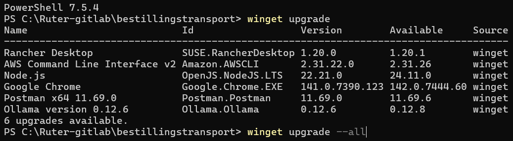
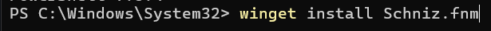
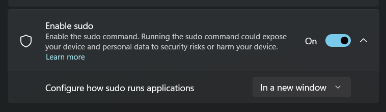
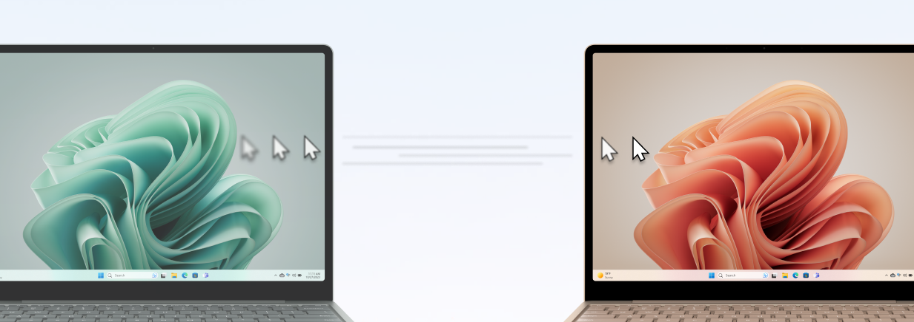
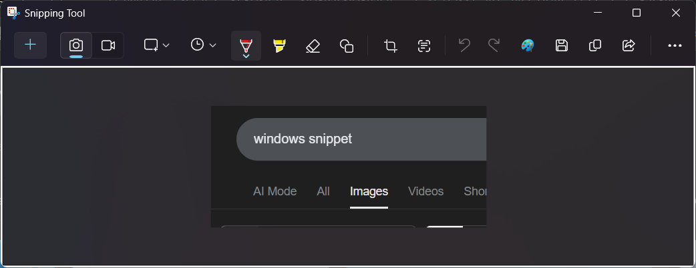
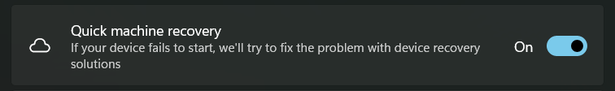

Have tried Mac twice 🍎
Give Win 11 a final chance
Really surprised!
Focus on Windows
Caveats
No admin = no fun
MS push for AI is annoying
Gaming is more fun on Windows
Some really old outdated parts
Love to hate Windows
SSD issues
localhost issues
Start menu issues
People hate change
New and fun
WSL 2 🖥️ + GUI
Winget 📦
Powertoys 🔫
Sandbox 💻
Sudo 🫡
Setup Win 11
Hyper V
WSL 2
Ubuntu, Arch or Fedora
Winget 📦
Most apps

Powershell 7
Node.js
fnm

Git
Git bash as npm default
Advanced Win 11 settings

OpenSSH Client
Dev Drive 💾
Resilient File System (ReFS)
Resiliency, performance, and scalability
23,5% - 40% + faster
Defender performance 🛡️
Mouse Without Borders

Snippet

And Video + Gif support!
When windows breaks
sfc /scannow
dism /online /cleanup-image /scanhealth
dism /online /cleanup-image /restorehealth
Reinstall just Windows
